DeferKV：用第一次真实解码反馈重新决定 KV 删除时机
论文：DeferKV: Rethinking Eviction Timing for One-Shot KV Cache Compression。作者：Zhe Wang、Jiakai Li、Yujia Sun、Rongzheng Wang、Shuang Liang。机构：电子科技大学、四川省泛在智能与可信服务重点实验室。首发：2026-10-05 13:13:14 UTC，即北京时间 2026-10-05 21:13:14；版本 v1，预印本，尚未核验同行评议状态。唯一论文入口：arXiv:2610.06286。阅读日期：2026-10-07，来源为官方摘要与完整 16 页 PDF。代码/项目页：未核验到独立公开入口。本文所有实验数字均为论文报告值，未进行独立复现。
1. 背景和问题
现有一次性 KV 压缩往往在 prefill 刚结束时不可逆地删除历史缓存，但提示尾部的注意力不一定能反映后续真实生成的访问需求；DeferKV 要解决的是在真实解码信号出现前过早决定保留哪些信息的问题。这段问题概括来自论文摘要及引言对 prompt-only 观察假设的讨论。作者没有声称所有缓存压缩都必须等待解码，也没有把问题归结为模型无法理解长文本；研究对象是用少数 query 估计历史 token 重要性、再一次性保留有限 KV 的推理策略。
长上下文推理中的 KV 缓存承担一个具体职责：历史 token 在各层产生的 key 和 value 留在显存，后续 token 的 query 可以读取它们，而不用重新计算整个前缀。序列越长，这部分状态越大。在显存有限和请求并发较高时，缩小缓存会影响可部署长度与服务容量。不过删除 token 状态同时丢失其后续可访问的信息，并不是把同一信息无损地重新编码。因此，预算固定时，质量首先依赖删除决策是不是保留了真正需要的历史内容。
SnapKV 一类方法使用提示结尾的一个观察窗口，聚合这些 query 对历史 key 的注意力，选出重要位置。它们不需要训练新模型，且只做一次历史缓存选择，后面的生成过程继续使用压缩缓存。这个设计隐含了一个迁移假设：正在消费用户指令、文档尾部或提示模板的 query，已经足够代表未来回答时需要查阅的内容。对文档问答、摘要和代码续写，这个假设有时成立；但“阅读提示”与“开始作答”的表征状态也可能发生变化，尤其当提示的最后一小段并不直接含有后续关键证据时。
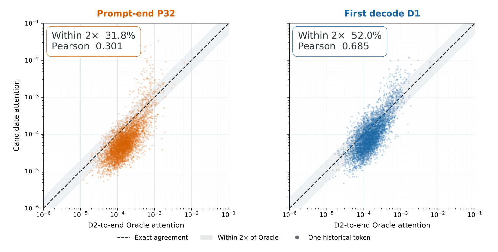
Figure 1 把这个差异变成可观察证据。每个点表示一个历史 KV token，横轴是从第二个解码 query 起到生成末尾的平均注意力，纵轴分别是提示最后 32 个 query 的平均注意力和第一个真实解码 query 的注意力，两轴都采用对数尺度。点越接近虚线对角线，当前观察越接近后续访问模式。Qwen3-8B 在 GovReport 的示例中，提示侧观察落在两倍误差带内的比例为 31.8%，首个解码观察为 52.0%；Pearson 相关分别为 0.301 和 0.685。它展示的不是输出得分，也不能直接推出保留多少缓存后质量会提高多少。其作用是说明：同一段历史内容的相对重要性，在真实生成开始后可能被更准确地辨认。图中仍有大量点偏离对角线，首个解码信号也不是后续全过程的完美预测器。
论文进一步设计了跨模型、跨任务的诊断。三个模型是 Qwen3-8B、Llama-3.1-8B-Instruct 和 Mistral-7B-Instruct-v0.3；四个任务是 GovReport、MultiNews、QMSum 和 RepoBench-P。每个模型与任务组合随机取 30 个样本，共 360 个评估实例，诊断预算为 512。所有 query 在同一个可压缩提示前缀上比较，排除提示的最后 32 个 token，并重新归一化注意力。这一步非常重要：若各 query 可以看到的 key 集合不同，分布变化可能只来自可见范围变化，无法支持“解码 query 更好”的判断。
符号解释：r 是相对于 prefill 与 decode 边界的位置；负数为提示最后 32 个 query，正数为前 8 个真实解码 query。这里没有把提示尾部当作第零个解码 token。
符号解释：n 为样本，ℓ 为层，h 为注意力头，T 为生成 token 数；a 是在同一提示前缀上归一化的解码注意力，o 是从第九步到最后一步的均值参考分布。它仅用于事后诊断，线上 DeferKV 不读取未来注意力。Figure 1 用第二步起的参考，Figure 2 用第九步起的参考，两个图的 oracle 口径不可混写。
符号解释：p 是某位置 query 的注意力分布，o 为未来参考，m 是二者平均，KL 为相对熵；以二为底的对数使 JSD 落在零到一之间。JSD 越小，完整分布越一致。
符号解释：JSDSim 为把分布差异反向表达的一致性分数，越高越好。它关注概率质量整体的位置，不能代替实际删除后的任务质量。
符号解释：S 是当前 query 选出的前 B 个提示 KV 位置，星号集合是参考分布选出的前 B 个位置；分子是共同保留位置数。此处 recall 是缓存位置重合度，与推荐召回率或答案正确率不是同一指标。
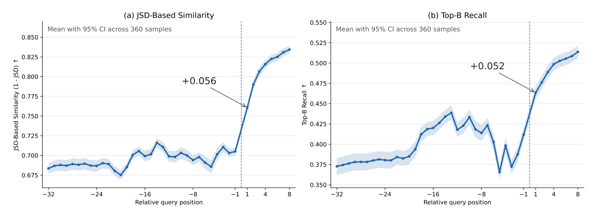
Figure 2 的横轴贯穿提示最后 32 个 query 到前 8 个真实解码 query，左侧纵轴为一减 JSD，右侧为前预算位置的重合比例；阴影是 360 个实例的百分之九十五置信区间。作者先在每个样本内平均层与头，再在样本间平均。从最后一个提示 query 到第一个真实解码 query，一致性增加 0.056、重合率增加 0.052；后续相邻解码位置的平均增量只有 0.009 和 0.007。图支持“最大单步收益发生在边界”，也显示提示内趋势并不严格单调，所以不能把每个离回答更近的位置都视为必然更重要。越晚的观察还会改善参考一致性，但等待它需要更久保留完整缓存。作者据此选第一个真实解码作为质量与额外开销之间的早期折中，而非证明等待一步在所有任务上都最优。
这项工作与未来感知缓存方法的区别落在信号获取途径。SpecKV 利用草稿模型生成代理回答；LAQ 使用低预算预看解码得到伪响应 query；LookaheadKV 用可学习预看 token 与 LoRA 预测未来关注位置。DeferKV 直接使用目标模型原本就会执行的第一次解码，因此免去训练辅助网络与预测未来 query 的环节。但真实信号也有代价：在它出现前不能把完整提示 KV 扔掉。质量收益与显存生命周期必须一起讨论，不能只说“无额外模型所以无任何额外成本”。
区分观察指标与决策收益还有一个原因：注意力不是历史 token 对最终答案的严格因果贡献。某个位置在许多头上被反复读取，并不意味着删除它必然使答案变错；反过来，一条罕见但关键证据可能只在少数层或某个晚期步骤被读取，平均权重偏低。因此作者先用完整缓存运行构造事后参照，再在真实压缩场景做任务评估，两段证据缺一不可。诊断中的位置重合率说明当前排序更接近未来排序，任务表才说明这种改进在所测预算下能够兑现为质量。即使两者方向一致，也不应把相关性观察写成理论上的无损保证。
另一个边界是“不可逆”的含义。这里指丢弃提示 key/value 后，后续解码不能直接访问原位置的状态，而不是原始文档在存储系统里消失。理论上可以重新读取提示并计算状态，但那会改变一次性压缩的运行成本与系统设计，不属于本文方案。对只保留预算缓存的解码，过早错误删除会持续影响之后所有 token；等待一个已有的真实计算步骤，则用短暂全量驻留换取一次更合适的排序机会。论文的论证围绕这个局部交换展开，所以应当把它与量化、低精度存储或无损状态搬运区分：那些方法改变状态表示或存放位置，本文改变的是选择证据和执行时机。
2. 方法
2.1 延迟不可逆选择的整体工作流
原文先给出流程，再定义首次解码 query，最后解释时序聚合。DeferKV 沿用一次性压缩的总体结构，只把压缩操作从 prefill 结束后移动到第一次标准 decode 执行后。提示输入仍正常经过目标模型，产生完整的提示 KV 与尾部 query；最后位置 logits 决定第一个输出 token。把这个 token 再送入目标模型时，系统才获得真实的首个解码 query。此时同时拥有提示侧的上下文观察和实际生成侧的反馈，可以对同一份历史 key 重新打分，再把低重要性的提示 KV 不可逆删除。压缩发生前，完整提示缓存必须仍在；压缩发生后，才把保存预算的缓存用于后续解码。
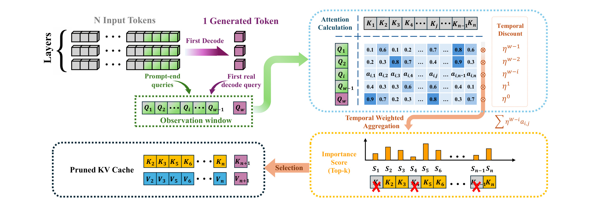
Figure 3 左上用多层缓存方块表示完整提示状态，绿色标出提示尾部 query，紫色方块表示第一个真实生成 token 对应的 decode query。二者组成一个观察窗口，右上对历史 key 计算注意力，再给窗口中的各行加上不同时间权重；越靠近实际解码，权重越大。右下是聚合后的每个历史位置得分，选择过程将其中重要位置留下，左下展示压缩后的 key 和 value，并把新增生成 token 的 KV 一起放进缓存。这里的“新增”状态不应与待压缩提示集合混为一谈：历史选择作用于 prompt KV，而第一次生成 token 自己的 key/value 需要保留以保证后续自回归计算。图中的前预算选择是示意，真实实现还沿用底层方法的平滑、预算分配和选择机制。
这个架构图有两个容易误读的地方。第一，紫色 query 不是在 prefill 末尾凭空生成，也不是为压缩额外编造的未来 token；它来自标准生成轨迹中对第一个输出 token 的正常处理。第二，图中的选择箭头不代表每生成一个 token 都重新执行全量压缩；论文针对一次性初始 prompt 缓存选择，后面继续标准解码。它因此避免了持续淘汰算法的反复调度开销，但也继承一次性决定无法随着回答主题迁移而恢复已删信息的局限。框架图中的层轴说明这个流程在模型层上执行，并不意味着所有层和头都必须共享同一保留索引。若接入不同底层压缩方法，索引的层或头粒度由原有机制决定。
系统语义上，需要把三个事件分开：用户看见第一个 token、模型执行第一次 decode、执行缓存删除。第一个 token 的分布由 prefill 最后位置 logits 给出；第一次 decode 是把这个 token 当新输入再执行模型，此时生成用于打分的 query；删除则在这个信号可用后发生。论文没有报告首 token 到达时间的独立测量，因此无法从端到端延迟推导首 token 更快。对实现者而言，这个时间顺序决定什么时候可以释放 prompt KV、什么时候可以申请压缩缓存缓冲区，以及原有请求调度器是否允许一次全量缓存 decode。可读性上把它笼统说成“等待首 token”会掩盖真正需要等待的是该 token 被处理后产生的 query。
2.2 首次真实解码 query 进入固定大小窗口
设提示为一串 token，目标模型在末尾给出条件分布，然后按照现有贪心或采样策略选择首 token。DeferKV 不替换这个策略，不改变为了获得观察而生成的 token，也没有加入人工预看内容。其方法定义如下。这个定义保证观察来自目标模型自己选择的输出状态，而非另一模型的代理响应；真实轨迹是否保持不变，是理解“不增加辅助生成”的前提。为了重要性打分而修改采样分布，既会改变实际 query，也会引入新的质量变量，不能再视为同一个方法实现。
符号解释：X 是长度为 N 的提示，θ 是目标模型参数，p 为首 token 条件分布，Decode 表示选取策略，y₁ 是首个生成 token。这里的 Decode 是 token 选择函数，后面“首次标准 decode 步骤”是把 y₁ 送入模型执行计算，两者语义不同。
当 y₁ 再进入模型，在每层产生新的 query、key 和 value。用于评估 prompt 历史重要性的 query 窗口，保留最近的 W−1 个提示 query，再接上这个真实解码 query。观察总大小仍为 W，所以收益不能简单归因于多加了一个观察而扩大窗口；它用更贴近生成阶段的一行替换最早的提示观察。论文基线与默认配置以 32 个观察位置为主要设置，因此直观上是 31 个提示 query 加 1 个真实 decode query，但一般定义适用于其他窗口大小。
符号解释：ℓ 为层，N 为提示长度，W 为观察窗大小，q 为该层 query；下标 dec,1 是处理 y₁ 时形成的首个真实解码 query。方括号表示按时间拼接，提示部分有 W−1 行，总窗口有 W 行。
保留提示观察的目的不是把它们当作已知无用信号。Figure 2 已经显示提示侧注意力对未来访问有中等一致性，真实解码的一行也可能受首 token 内容影响，尤其首 token 是格式字符、套话或采样产生的变化时。二者融合可以保留输入阶段已有的结构与语义线索，再用真实生成状态校准排序。作者选择不完全丢弃提示侧观察，构成一种低复杂度的时序证据融合。这个窗口是在 query 空间的组合，不是把输出 token 的字面内容拼到用户提示里重新跑一遍 prefill，因此不应被描述成新的提示工程或人工反馈过程。
2.3 时序折扣的注意力聚合与底层缓存选择
有了固定窗口，作者计算其对提示 key 的注意力。可见性约束沿用原模型，提示 query 不能因为进入观察窗而看见本来不允许访问的未来位置。真实解码 query 可以观察完整提示，因此每一行的有效位置须遵守各自的因果语义。方法公式简写为注意力算子，没有另外设计新的模型层，也没有改变目标模型权重。
符号解释：A 为当前层的观察注意力矩阵，K 是提示 key 集合，矩阵元素 aᶩᵢⱼ 是第 i 个观察 query 分配给第 j 个提示 key 的注意力。Attention 包含原模型的缩放与可见性约束，不能用不带因果掩码的全矩阵替代。
符号解释：s 为第 j 个提示位置的重要性，i 按从早到晚排列窗口 query，η 为时间折扣系数。最后一行真实解码的权重是一，较早提示行的权重按指数减小。当 η 为一时，各行同权；虽然公式求和而非取均值，两者只差公共常数，对 token 排名等价。
时序折扣把“更接近生成的 query 往往更有用”转化为排序先验。它没有学出每行可靠性，也不保证时间顺序与重要性严格对应。以默认 η=0.7 为例，越早行贡献衰减得越快，窗口中靠近生成的少数行影响最大；真实 query 虽权重最高，但不是唯一信息源。这也解释为什么均匀平均与完全去掉解码反馈是不同消融：前者还包含真实 query，只把它与提示行同等处理；后者没有实际生成侧证据。观察诊断、窗口替换和权重折扣是三个层次，不能把其中任一个等同于最后任务质量提升的全部原因。
得到得分后，DeferKV 保留底层淘汰方法的局部平滑、预算分配和缓存选择策略，只替换原来的 prompt-only 重要性得分。默认 SnapKV 风格实现仍可使用池化把孤立高分与邻近语义位置结合；PyramidKV 可保留跨层预算，AdaKV 可保留跨头分配，ChunkKV 可把 token 分数聚合成块分数。选出的 prompt key/value 再与 y₁ 的新增 key/value 合并，之后正常自回归。由此它是选择信号与执行时机的改进，可以与其他粒度机制结合；但“兼容”指论文测试的机制组合，不代表任何推理引擎都能零改动接入。特别是优化注意力内核往往不显式输出完整权重，提取观察注意力的成本、缓冲区复用和索引收集仍须实测。论文的低开销结果来自其具体实现与批大小一的实验设置。
3. 实验结果
3.1 模型、预算与比较对象
任务评估覆盖 LongBench 的 16 个数据集、RULER 的 11 类任务以及单针检索。模型是前述三个约七到八十亿参数模型，使用官方 tokenizer 与提示模板；主要结果使用贪心解码，批大小一，随机种子 42，硬件为 80GB NVIDIA A100。预算记为 nL，n 为每层 prompt KV 预算，L 为层数，n 从 64 到 1024；它不是整个推理过程中所有 KV 的绝对上限，新生成 token 的缓存仍需处理。LongBench 附录列出的输入长度范围为 1235 到 18409，效率实验单独使用 32K 输入，不能把两者当作相同输入分布。
基线除 SnapKV 外，包括 LAQ、SpecKV 和 LookaheadKV，分别使用低预算预看 query、草稿响应、可学习预看模块。附录说明官方实现和标准淘汰设置，同时为不同目标模型使用对应代理模型或训练配置。DeferKV 的优势是无需新训练和辅助模型，然而这些基线采取不同的信号成本与初始化路径。比较说明同一预算下综合效果，不能直接证明在所有相同算力预算、同样训练数据或同一内核条件下严格最优。Full KV 被放在结果表作完整缓存参考，并非参与五个压缩方法的粗体排名。
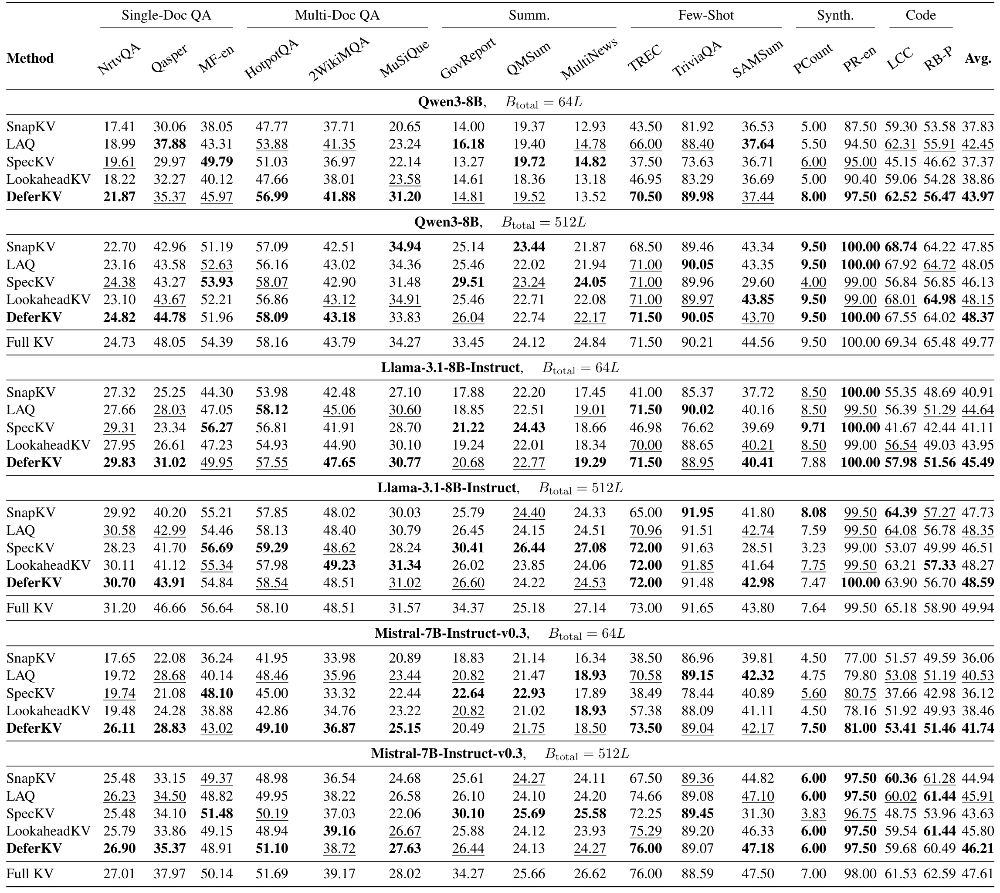
Table 1 的列覆盖单文档问答、多文档问答、摘要、小样本、合成任务和代码，最右侧是任务平均分。Qwen3-8B 在 64L 预算下，DeferKV 为 43.97，最强压缩基线 LAQ 为 42.45，绝对差为 1.52，按后者为分母约为 3.58% 的相对提升；这就是摘要中最大 LongBench 提升的具体设置。Llama 同预算为 45.49 对 44.64，Mistral 为 41.74 对 40.53。预算增加到 512L 后，三个模型分别为 48.37、48.59、46.21，对应最强压缩基线为 48.15、48.35、45.91，差距明显缩小。不能把六个设置都写为提升 3.58%，也不能把平均领先理解成每个数据集领先：例如 Qwen 小预算 Qasper 上 LAQ 的 37.88 高于 DeferKV 的 35.37，而 GovReport 上 LAQ 的 16.18 高于 14.81。对方法评价应同时看总体与任务特异性。
附录 Tables 5–7 补全 128L、256L、1024L 预算的逐任务结果。Qwen 的 DeferKV 平均分依次为 43.97、46.12、47.49、48.37、49.04；其 Full KV 是 49.77，1024L 时与完整缓存尚有 0.73 分差距。Llama 的 1024L 为 49.12，对照 Full KV 49.94；Mistral 为 46.80，对照 47.61。随着预算变宽，保留更多历史位置本身就减轻错误删除，因此更好重要性估计的边际价值收缩。论文的表格支持小预算部署尤其值得关注，但没有提供预算极小至无法保留任务证据时的可靠保证，也不能把偶尔单任务超过 Full KV 的现象解释为模型能力全面增强。
3.2 超长上下文中的平均收益与失败任务
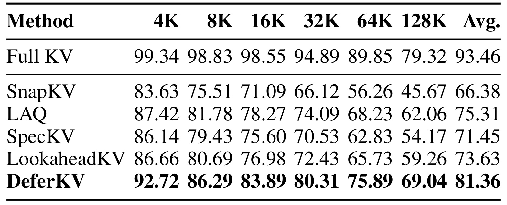
Table 2 固定 Llama-3.1-8B-Instruct、1024L prompt KV 预算，横向比较从 4K 到 128K 的上下文。DeferKV 在六个长度的平均准确率分别为 92.72、86.29、83.89、80.31、75.89、69.04，跨长度平均 81.36。最强压缩基线 LAQ 的跨长度均值为 75.31，差 6.05 个百分点，以 LAQ 为分母相对改善约 8.03%。完整缓存跨长度均值为 93.46，所以新方法仍有显著质量损失。到了 128K，DeferKV 为 69.04，LAQ 为 62.06，Full KV 为 79.32；1024 个提示位置相对于 128K 少于百分之一，表明严格压缩下仍能保住一部分有效检索能力，但不意味着原信息保存了百分之九十九或所有子任务都成功。
附录 Table 9 特别值得读，因为平均值容易掩盖结构性失败。32K 时 DeferKV 在 S-NIAH-3 为 98.00，而 MK-NIAH-3 为 0.00；64K 时该多键任务只有 3.00，128K 时为 1.80。128K 的常见词提取 CWE 只有 1.68，Full KV 同设置也只有 0.06，反映模型与任务本身的难点，不能单凭压缩策略解决。与此同时一些单针或多查询任务依然很高，使总体平均表现较好。工程上，若目标业务主要靠多证据聚合或频次信息，不应依据跨任务均值直接选择这套缓存策略。需要先把真实请求归入类似任务，再观察压缩是否稳定保留全部必要信息。
3.3 内存峰值、端到端时间和多等待一步的价值
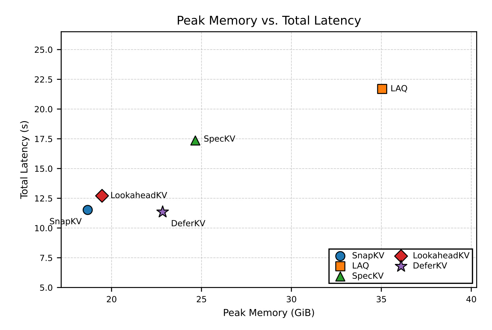
Figure 4 横轴为 GPU 显存峰值 GiB，纵轴为总推理延迟秒，设置是 Qwen3-8B、32K 输入、128 个生成 token、1024L 预算，预热后五次平均。DeferKV 的报告值是 22.84GiB 和约 11.56 秒，延迟与 SnapKV 接近，低于 LAQ、SpecKV 和 LookaheadKV；内存低于 LAQ 和 SpecKV，却高于 SnapKV 和 LookaheadKV。图揭示“真实反馈不依赖辅助模型”不等于“最小峰值显存”：等待第一次全缓存 decode 留住了较多状态。更重要的是这张图测量端到端请求时间，未拆分首 token、第一步 decode 和后续每 token 时间，不能用 11.56 秒声称首 token 延迟改善。并发服务还可能受峰值重叠和调度影响，批大小一的点图不足以推出生产吞吐倍数。横轴包含模型常驻权重、临时张量和缓存等共同占用，不能仅用这个总峰值算提示缓存压缩率。另一方面，解码大量步时，较小驻留缓存可能改善读带宽和容量，但那是稳定阶段的效益，需要另记逐步曲线。若线上多个请求同时跨越首次完整解码，峰值相叠可能影响可接受并发；若调度器允许分批跨过边界，成本又会不同。论文没有给出这种调度实验，应把这些作为下一步实测项目，不能自行填入速度倍数。
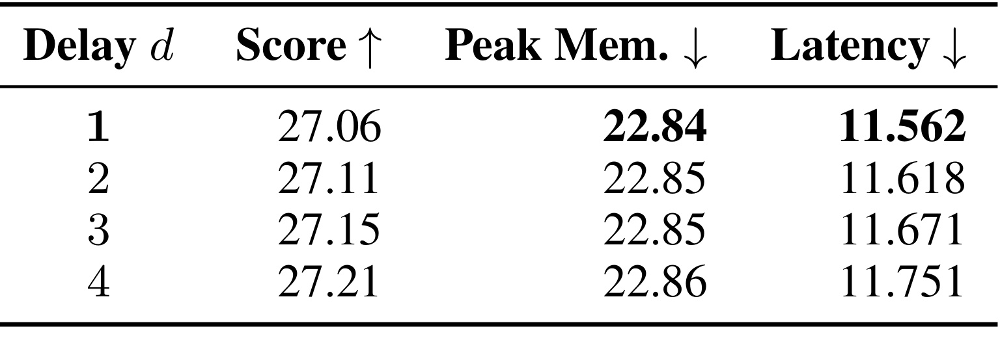
Table 3 将延迟步数 d 从一增加到四，任务为随机取出的 100 个 32K GovReport 样本，Qwen3-8B 输出 128 token，预算 1024L。任务分数按一百个样本平均，内存与时间却是在一个样本上预热后五次平均，这两个统计单位必须区分。d 为一时分数 27.06、峰值 22.84GiB、时间 11.562 秒；两步为 27.11、22.85、11.618；四步为 27.21、22.86、11.751。两步相对一步任务分数只增约 0.18%，时间增约 0.48%；四步分数增约 0.55%，时间增约 1.63%。内存峰值几乎没变，可能因为峰值已在前面的全缓存阶段出现。表支持默认早期一步折中，但不能证明多等一步在所有任务都没用，尤其未来注意力变化更慢的长回答尚未充分覆盖。
把图和表连起来，正确结论是质量改善的主要价值来自获得真实生成信号，而观察更多生成信号的边际收益在该实验里较小。系统优化还须看首次全缓存 decode 是否会导致请求无法装入显存。一次性压缩能减少后续驻留量，却不能让原本无法完成 prefill 的输入凭空可运行。对同样达到最大长度的请求，峰值、总时长与稳定阶段的缓存量是三种口径，压缩后的低驻留量只对应其中一部分。
3.4 真实反馈与时间折扣各贡献多少
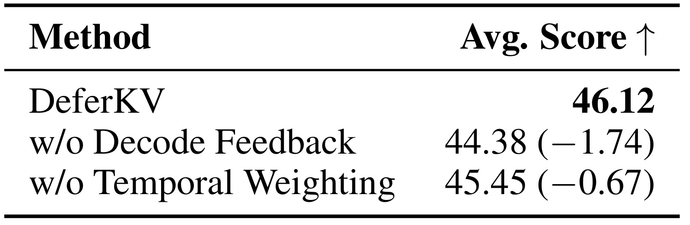
Table 4 在 Qwen3-8B、LongBench、128L 下对两项机制分别消融。完整 DeferKV 平均分为 46.12，去掉真实 decode 反馈降到 44.38，即少 1.74 分；把时序权重改成均匀聚合降到 45.45，即少 0.67 分。二者都带来改善，前者在这个设置的损失更大，符合论文强调边界信号的动机。这里两项损失不能相加来推断“双去掉”得分，因为存在机制间交互，表没有报告这种组合；也不能把 1.74 称为百分之 1.74 的提升，它是平均任务分的绝对差。若比较基线采用不同窗口或平滑设定，仍需检查是否控制其他因素；这张小表主要验证同一方法内部两项选择的贡献。相应的工程检查应确认消融只撤掉目标信号，而保留预算、观察总大小和底层平滑设置。否则删除一个模块可能同时改变观察数量，使分差混入其他因素。论文的表支持两个设计均有用，但未提供分任务置信区间，应避免把单个均值差写成统计显著的普遍规律。另外需比较各项消融对不同任务的影响，避免平均值掩盖某类能力退化。
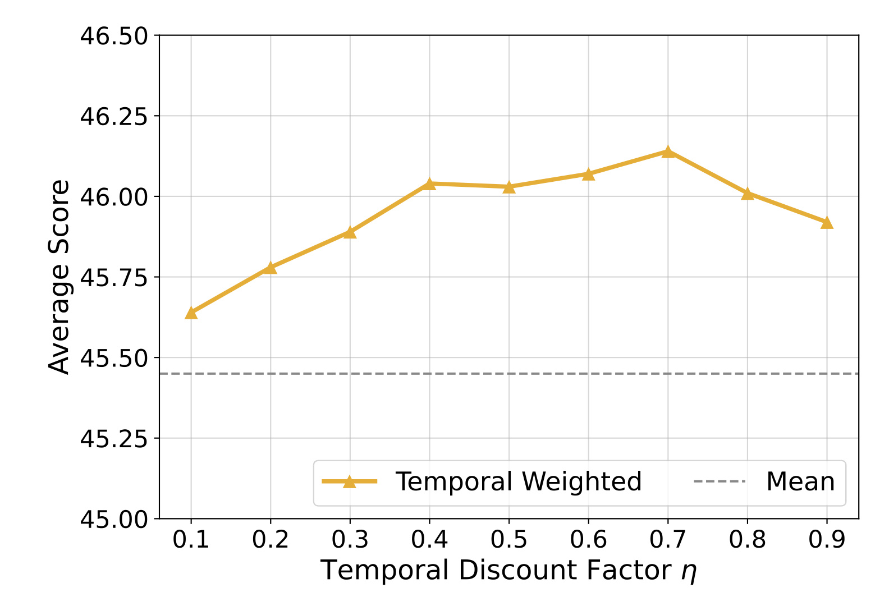
Figure 5 横轴是 η 从 0.1 到 0.9，纵轴是同一个 128L LongBench 设置的平均分，灰色虚线为均匀聚合，黄色曲线为时序聚合。曲线整体高于均匀基线，0.7 附近最好，较小的折扣更偏向真实 query 和最后少数提示行，接近一时则逐渐回到各行贡献相似。作者据此统一采用 0.7，不对各模型与任务额外调参。图支持一段参数范围内性能相对稳定，但坐标纵轴从 45 起，视觉起伏不能按全尺度解读，且没有展示每个点的置信区间。0.7 是作者的经验默认值，不是数学上证明的最优值，更不是在中文、多轮、工具调用等新场景上已经核验的固定常数。另外，较大的折扣保留更多早期提示信息，较小的折扣则使最终真实 query 占据更大比例，两端都可能丢失另一侧的有效证据。曲线中间较好体现的是当前输入分布下的平衡，而非越强调最新信息就越好。部署中若首 token 主要是格式或礼貌用语，需要重新检查这个平衡。
3.5 与其他缓存机制结合及采样生成
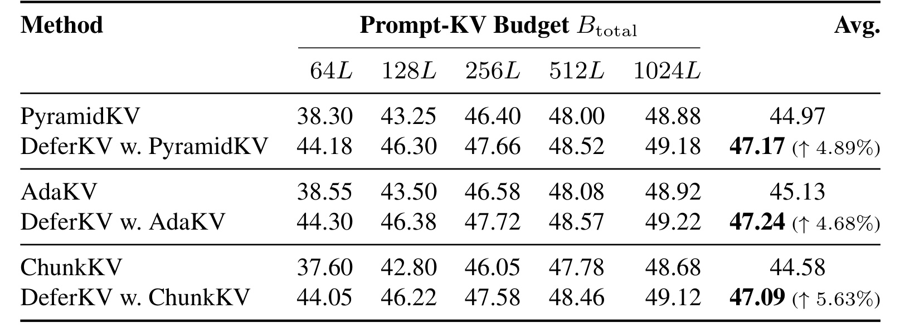
Table 8 在 Qwen3-8B 的 LongBench 上，把新得分分别接入 PyramidKV、AdaKV 和 ChunkKV，保留原来的层预算、头预算与块选择机制。跨五个预算的均值从 44.97 到 47.17、45.13 到 47.24、44.58 到 47.09，相对分别改善 4.89%、4.68%、5.63%。这些比例是在每种方法的预算均值上计算，与 Table 1 中对最强基线的单设置改善 3.58% 口径不同。在 64L 下改善尤为明显，例如 PyramidKV 从 38.30 到 44.18；1024L 时从 48.88 到 49.18，差距收敛。它说明更好的生成需求观察与预算结构可以互补，却没有报告所有组合的内存和延迟，因此不能把兼容性得分表用作零开销证明。对于层预算，新的重要性分布可能改变同样容量内选择的位置，但不改变各层已经分配的数量；对于头预算，需要检查分数替换进入分配还是仅进入选择，论文强调保留原机制。对于块选择，高分 token 会经块内聚合影响整个语义块，最终保存粒度不再是独立位置。三个路径的转换并非同一种索引操作，这张兼容性表的价值是证明信号可以迁移，而不是取消底层方法之间的实现区别。因此测试时应分别检查保留索引、块完整性与对应预算约束，并补充资源测量。
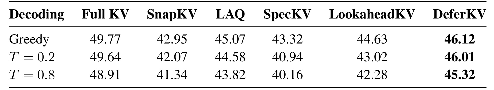
Table 10 回应真实 query 会不会依赖首 token 随机性的疑问。Qwen3-8B、128L 下，贪心时 DeferKV 为 46.12，温度 0.2 为 46.01，温度 0.8 为 45.32，均高于各对应压缩基线；Full KV 分别为 49.77、49.64、48.91，也随较高温度下降。结果支持收益不只存在于确定性生成，但表未列多个采样种子的误差范围，不能据此证明任一次首 token 采样都稳定或对所有温度鲁棒。首 token 改变会同时影响后续生成轨迹与缓存打分，因此任务下降不应全部归因于淘汰本身。可把采样表理解为一个必要的补充检查，仍需在高温、长链推理和不同停止规则上重复测试。复现时应让每一种压缩方法使用对应的相同采样种子或采样集合，并分别记录首 token 内容和后续错误；否则偶然轨迹差异可能影响均值。比较完整缓存也很重要，它让我们看见生成随机性本身的变化，而不把所有波动都归于缓存删除。实践中还可统计首 token 是格式字符、内容词或套话时的差异，以定位反馈质量。
3.6 单针位置热图与预算宽松后的收敛
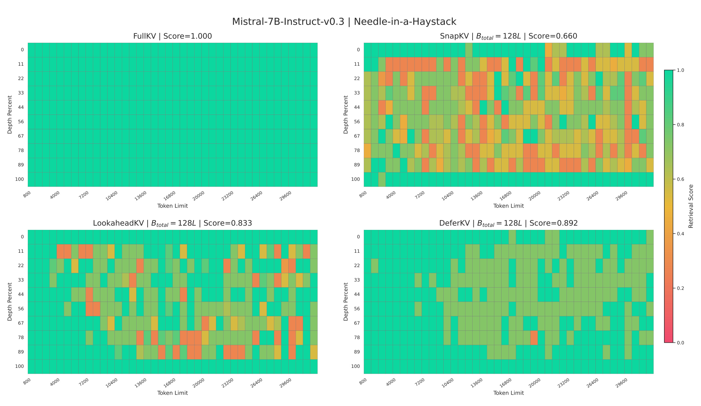
Figure 6 使用 Mistral-7B-Instruct-v0.3，把上下文长度和关键事实的插入深度放在两个坐标轴，每个网格的颜色表示检索得分。四个面板是完整缓存、SnapKV、LookaheadKV 和 DeferKV；预算 128L 时对应整体均值为 1.000、0.660、0.833、0.892。SnapKV 对提示中部的多种长度呈现明显低分区域，DeferKV 保留更多绿色，但并非全绿。热图的价值在于把位置相关失败展开，而非只给出单个均值。这里四面板来自原始论文的同一复合图，不能把它拆解成四个独立实验结论，也不能因为检索成功较高就认定摘要、推理和多证据整合都同样稳健。热图中某些深度仍比上下文头尾更容易出现低分，提示证据位置仍然影响压缩表现。对检索型应用，需检查真实语料是否有同样的位置分布，不能把随机插入单句关键事实的合成设置视为复杂文档的完整代表。真实文档还存在重复、歧义与互相冲突的证据。若答案需要比较两个分散段落，保留单个针位置的成功并不足够，需扩展检索目标。
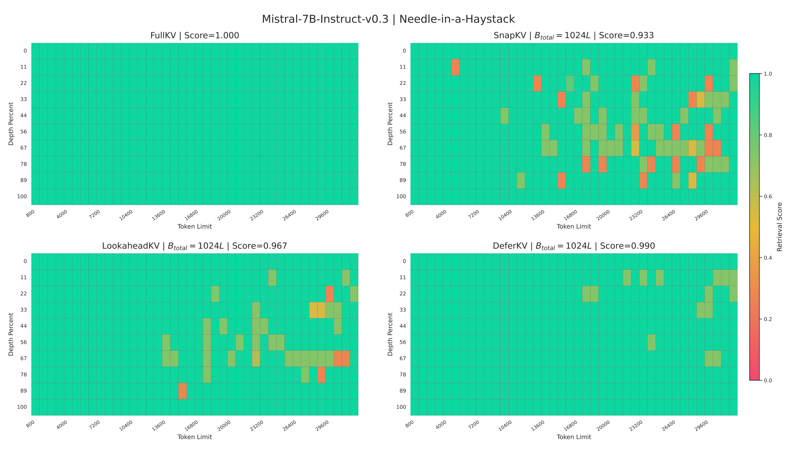
Figure 7 把预算增至 1024L，保持同模型和检索布局，完整缓存均值仍为 1.000，SnapKV、LookaheadKV、DeferKV 分别为 0.933、0.967、0.990。更宽预算让各方法大幅接近完整缓存，DeferKV 的相对空间随之缩小，但仍在所测网格上较稳定。两幅图同时支持一个实用判断：缓存观察改进最值得在预算紧张时评估，预算很宽时简单基线也可能满足需求。图的输入长度主要约八百至三万 token，不能把这一热图直接当作 128K 单针结果；128K 的证据属于前面的 RULER 表，两种 benchmark 的任务设置和聚合方式不同，应分别记录。宽预算下整体接近满分，也意味着简单基线可能以更低系统复杂度达到可接受质量。因此工程选型应衡量精度目标和额外执行路径，不必为追求单针均值的少量提高自动引入新的逻辑。若业务要求高可靠多事实读取，仍应回到失败子任务单独设置验收线。同时报告最差插入深度与长度区间，才能避免整体平均掩盖固定位置的系统性遗漏。
4. 总结
DeferKV 的核心贡献是重新检查一个常被当作默认实现选择的时间点：必须在 prefill 完成后立刻执行一次性 prompt KV 删除吗？作者通过三个模型和四个诊断任务观察到，真正开始生成后，query 与后续访问分布的一致性会跨边界跳升。方法因此保留完整缓存直到第一次标准 decode 执行，融合最后若干提示 query 与真实解码 query，再用时序折扣形成历史重要性。它没有额外模型、未来预测模块和新训练过程，且可与层、头、块等预算机制结合。重要性排序的信号源比单纯改预算结构更早决定哪些信息可能被不可逆丢掉，这个认识是本文最值得保留的部分。
实验支持三项有边界的判断：在三种模型与 LongBench 的所测预算上，平均分有改善；固定 Llama 与 1024L 的超长 RULER 中，跨长度均值有提升；32K、批大小一的 A100 实验中，新增机制的总延迟保持较低。所有数字都应带上模型、预算和统计单位，3.58% 与 8.03% 是明确设置下的相对改善，不能推广成所有缓存压缩的通用收益。正文与附录同时展示较弱任务和接近完整缓存时收缩的收益，说明新观察信号解决的是重要性估计误差的一部分，不能修复模型本身的超长推理能力，也不能在预算不足时保住任意多证据。
对于推荐系统中的大模型应用，可借鉴的是不可逆筛选与信息到达顺序的关系。用户历史、候选属性和检索材料在生成前的显著程度，未必等于模型开始给出推荐理由时的实际访问需求。如果生成式解释或对话推荐使用长历史 KV 压缩，应先验证第一步真实生成是否改变证据选择，再决定是否延后淘汰。这是本文机制的迁移假设，论文没有在推荐数据集验证。尤其推荐任务可能依赖多个稀疏兴趣与长期偏好，单个早期 query 可能过度集中于首个解释主题，不能据长文问答成绩替代个性化排序的线上质量评估。
局限首先是显存生命周期：它仍要求完整提示 KV 完成 prefill 与第一次 decode，不能直接解决完整缓存本身装不下的问题。其次是观察覆盖：只用早期生成与提示尾部，并且选择一次，后续主题切换、工具返回或长链推理访问新证据时，删掉的信息无法恢复。第三是实验外推：模型尺度约七八十亿参数，硬件与批大小较单一；未核验独立代码入口，多采样种子、并发吞吐以及首 token 分段延迟证据仍缺失。这些限制是明确的实施边界，不应被“部署简单”四字略过。
后续最有价值的验证有三个。第一，在真实服务引擎记录 prefill、首次完整 decode、压缩和稳定解码各自时间与显存，检查注意力提取会不会抵消收益；还应看尾延迟与并发情况下的峰值重叠。第二，对长回答中途访问模式变化、多证据聚合和中文任务按子任务统计错误，不只看总均值，尤其追踪 RULER 多键失败的原因是缓存遗漏还是生成能力。第三，把新的得分插入既有压缩方法进行同预算、同内核、同采样种子对比，比较额外等待与草稿预测两种成本路径。完成这些检查之后，才能判断早期真实反馈在特定服务上是否构成值得采用的质量和资源折中。